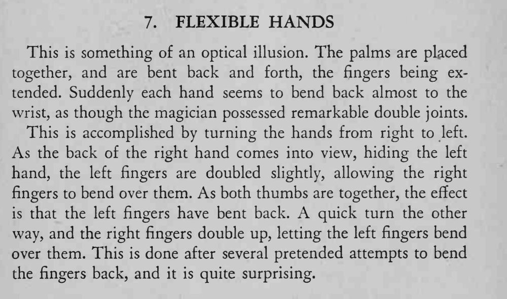

魔术师双掌合拢、手指伸直，忽然两手像折断一样向后弯到接近手腕，仿佛关节能反折。
关键是两手转动时拇指始终并拢，速度要快，别让观众看清手指的替换。

This is something of an optical illusion. The palms are placed together, and are bent back and forth, the fingers being extended. Suddenly each hand seems to bend back almost to the wrist, as though the magician possessed remarkable double joints. This is accomplished by turning the hands from right to left. As the back of the right hand comes into view, hiding the left hand, the left fingers are doubled slightly, allowing the right fingers to bend over them. As both thumbs are together, the effect is that the left fingers have bent back. quick turn the other way, and the right fingers double up, letting the left fingers bend over them. This is done after several pretended attempts to bend the fingers back, and it is quite surprising.